Transformer
When we think about the top renowned and impactful ML models of the modern world, Transformer must have seat in the list. The employment of attention mechanism enables Transformer to outperform various CNN- and RNN-based approaches in various sequence modeling tasks and achieve state-of-the-art performances. My last article provides a concise explanation about the core features of Transformer, and I highly recommend readers who are unfamiliar with Transformer to go through it first before moving on to the next sections.
However, Transformer suffers from serious resource consumption. The self-attention mechanism allows every token to attend to every position within the sequence. Consequently, the computational and memory complexity of self-attention mechanism scale quadratically to the sequence length. Such expensive cost hinders Transformer’s application to handle very long sequences in practice. Additionally, naive self-attention mechanism does not take context information into consideration, which further restricts its modeling capability. Fortunately, several studies were conducted focusing on cost reduction and performance improvement. In this article, I will introduce 6 popular extensions of Transformer that are commonly used in performance benchmarking, discussing the motivations, core techniques, and pros and cons of each variation.
Sparse Transformer
When we are working with sequential data, like text, video, or music, we usually don’t process the entire context but only focus on the key information we are looking for. Therefore, the process of visiting every position of the sequence in self-attention seems to be redundant. Moreover, by visualizing the attention matrices, Child et al. discovered that most layers have sparse attention patterns across most data points, showing that self-attention presents the same behavior of concentrating attention weights on necessary parts of the sequence. This observation suggests that some form of sparsity can be introduced to improve model complexity without significantly affecting the performance.
To incorporate sparsity with self-attention, Sparse Transformer proposes the Factorized Self-Attention. For each attention head, it computes attention on only a subset of positions defined according some task-specific sparsity definitions. The outputs of each head are later aggregated together to maintain the ability of propagating information from arbitrary input positions to arbitrary output positions. Such propagation can be done in constant number of steps as the positions are scattered across a fixed number of attention heads. In [1], researchers demonstrated how to apply factorized attention to data with and without periodic structure, showing the potential of Sparse Transformer to handle all kinds of task.
Sparse Transformer is capable of avoiding extra computations on poorly related positions and reduces computational complexity from quadratic to sub-quadratic, while achieve comparable or better performance comparing to standard Transformer. Moreover, since factorized self-attention keeps track of only the necessary information, Sparse Transformer presents a better ability to handle long-term dependencies.
Nevertheless, Sparse Transformer comes with some obvious shortcomings. First and foremost, researchers have to construct a precise and accurate sparsity definition prior to the use of Sparse Transformer since sparsity cannot be learned via training. Such challenging prerequisite hinders the application of Sparse Transformer on several real-life tasks since they are too complicated to be modeled manually. Additionally, the trade-off between expressivity and efficiency must not be ignored. Applying sparsity will definitely lead to a certain degree of information loss and consequently downgrade performance, further restricting Sparse Transformer to handle very complicated tasks.
Transformer-XL
Transformer-XL provides a different enhancement approach aiming to improve model expressivity and evaluation speed. Aside from the fact that Transformer cannot effectively model long range dependencies beyond the length of training segments, it also suffers from content fragmentation. Since the input sequences are chunked regardless of contextual patterns like semantics, Transformer is not provided with accurate content-wise information to learn. During evaluation, the procedure ensures each prediction utilizes the longest possible context exposed during training, which ends up as an expensive process. As a result, Transformer-XL proposes the concept of segment-level recurrence with state reuse accompanied with relative positional encoding to resolve this issue.
Segment-level recurrence with state reuse tackles content fragmentation with the idea of reuse and extend. The hidden state sequence computed for the previous segment is fixed and cached to be reused as an extended context when the model processes the next new segment. This method allows the model to tackle longer-term dependency without explicitly enlarge the training data size and effectively prevents content fragmentation. The largest possible dependency grows linearly with respect to the number of layers and segment length; in other words, Transformer-XL can achieve long range dependency modeling with linear runtime.
One remarkable point is that the original absolute positional encoding no longer fits as the model has no information to distinguish the positional difference between segments. Hence, Dai et al. utilizes the relative positional encoding which encodes the relative positional information in the hidden states. When hidden state sequences are used, the absolute position can be recovered recursively from relative distances through multiple segments and dynamically inject this information to attention scores to compute with precise positional data.
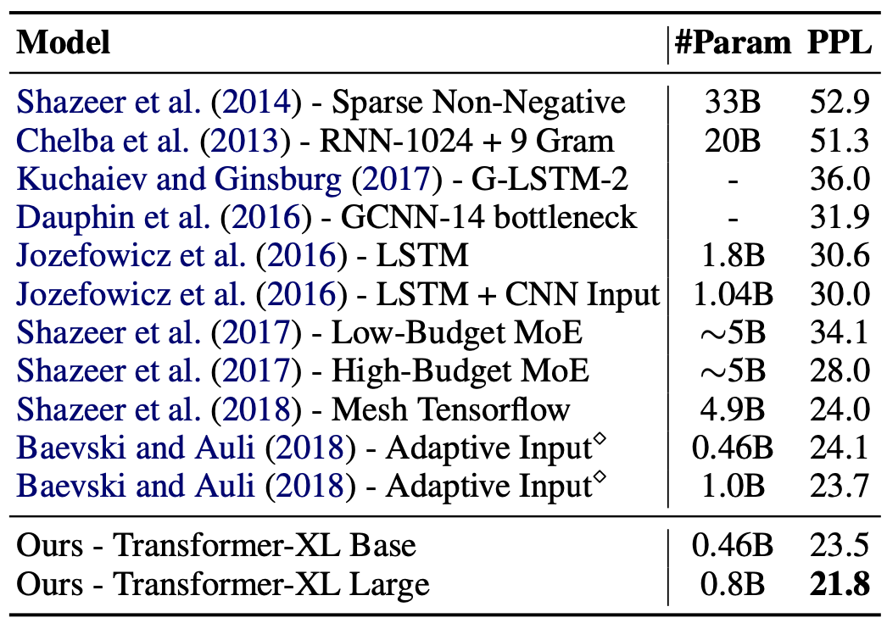 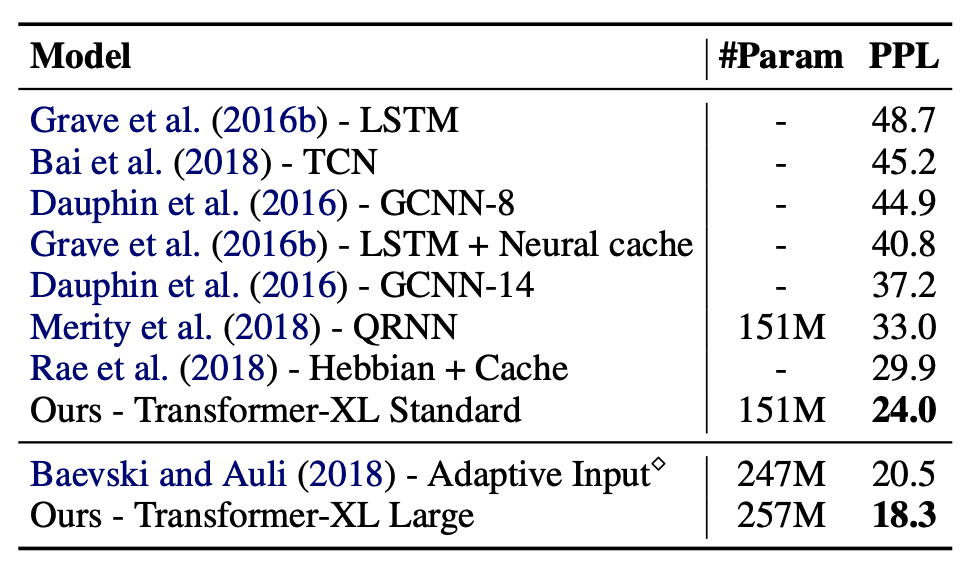After modifying the Transformer with the above two features, Transformer-XL achieves a dramatic 1874 times speed-up during evaluation comparing to standard Transformer. The cache and reuse of previous segments eliminate the need of computing with the entire previously-seen sequence, and significantly reduce the inference runtime. Additionally, we can see from the tables above that Transformer-XL achieves the lowest perplexities among other state-of-the-art models on multiple NLP tasks, indicating the success in expressivity improvement through history caching.
On the other hand, Transformer-XL requires extra memory to store the cached hidden sequence states, which further intensify the existing memory issue. When it comes to modeling very long sequences, Transformer-XL might be requiring more memory than standard Transformer. Despite of the performance boost, the barrier of hardware accessibility may be challenging when applying Transformer-XL in practice.
Reformer
Reformer approaches memory constraint reduction by reconstructing the model architecture of Transformer. Kitaev et al. discovered that backpropagation of deep Transformer is memory-intense as the activations of each layer must be stored for computation. Furthermore, the depth of intermediate feedforward (FF) layers is often much larger than the depth of attention activations for large Transformer-based models, hence the memory required for activation storage cannot be ignored.
Inspired by the RevNet (Gomez et al. 2017), Reformer replaces the deep feedforward layers with reversible layers. Reversible layers allow the activations at any given layer to be recovered from the activations at the following layer, using only the model parameters. This modification completely eliminates the need to store intermediate activations and reduce extra memory to scale by the number of layers to store the additional model parameters. Reformer also rewrite the activation computation procedure to split activation computations with respect to positions, as they are completely independent from each other, and compute one chunk at a time. The sequential computation prevents exceeding accelerator memory by transferring only the parameter of the computing layer form CPU to accelerator, and reduce the cost of transferring data between CPU and accelerator.
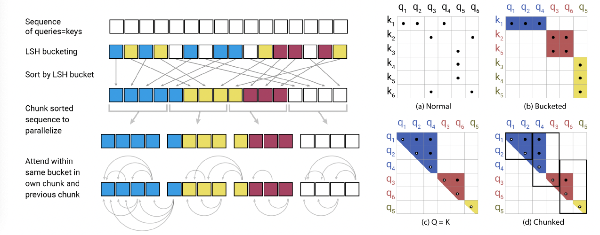After handling the feedforward layers, Kitaev et al. proposed the locality-sensitive hashing (LSH) attention as a memory-efficient way to compute attention scores. Since the output of softmax is dominated by the largest elements, we only need to focus on the keys that are closest to the target query. LSH satisfies this goal by emphasizing a specific size of neighborhood by making nearby vectors get the same hash with high probability and distant ones do not. Kitaev et al. further introduced multi-round LSH attention to avoid biased output. By computing multiple rounds of hashing distinct hash functions, LSH attention is empirically shown to perform as good as self-attention. Last but not least, LSH attention also utilizes recomputation to prevent explicitly storing the product of query and key matrices, and set query and key to share the same projection matrix.
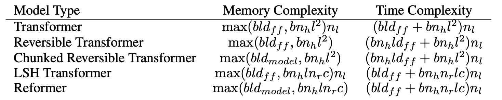 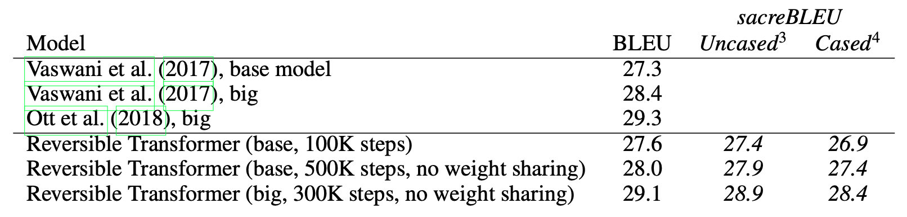The major improvement achieved by Reformer is to lower memory complexity without the expense of accuracy. By comparing the data presented in the tables above, Reformer reduces both memory and time complexity to scale linearly with respect to sequence length while maintaining similar performance as Transformer. Smaller memory requirement also loosen the hardware requirement to train large Reformer.
Working with the new architecture, we can easily tell that the computational complexity of Reformer significantly increases. A lot of recomputation has to be done during every backpropagation in order to restore the intermediate activations, which dramatically raise the training cost of Reformer. Reformer also requires extra computations to model long-term dependencies due to multi-round LSH. Most importantly, Reformer does not demonstrate a general performance improvement comparing to Transformer as it only performs better with sequence longer than 2048. In conclusion, Reformer is a good substitution for Transformer that performs equally while taking up less memory. However, it is not a good candidate if you are searching for a high-performance and high-responsive extension.
Linformer
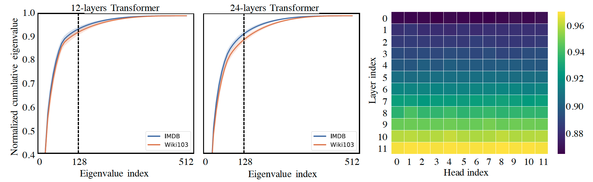Analogous to Reformer using multi-round LSH attention to approximate ordinary self-attention, Linformer proposed another approximation method: linear self-attention.
Wang et al.[5] made a crucial discovery that the context matrix (i.e., the output matrix of the softmax function whose input is the scale dot product of query and key matrices) possesses the low-rank property. The figure above displays the result of applying singular value decomposition (SVD) to the context matrix across different layers and different heads of the pre-trained model and plot the normalized cumulative singular value averaged over 10k sentences. The curves on the left exhibit a clear long-tail spectrum distribution across each layer, head and task, while the spectrogram on the right displays that the spectrum distribution in higher layers is more skewed than in lower layers. These phenomenons indicates that most of the information of the context approximate the attention matrices with low-rank matrices with SVD without significant performance loss. Low-rank attention is able to reduce time space complexity from quadratic to O(nk), where n stands for sequence length and k stands for rank.
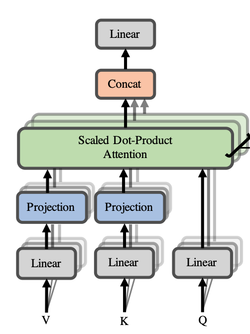However, approximating with SVD directly will result in additional computations as SVD has to be performed for every attention matrix. As a resolution, Wang et al. adds two extra projection layers to allow the model to learn the approximation. The model will first project the original (n x d)-dimensional key and value matrices into (k x d)-dimensionality, then feed them into attention score calculation, ensuring the context matrix to have (n x k)-dimensionality. As this operation is a different formulation of low-rank approximation, it only requires O(nk) time and space complexity, and we can reduce to linear complexity by choosing a small k.
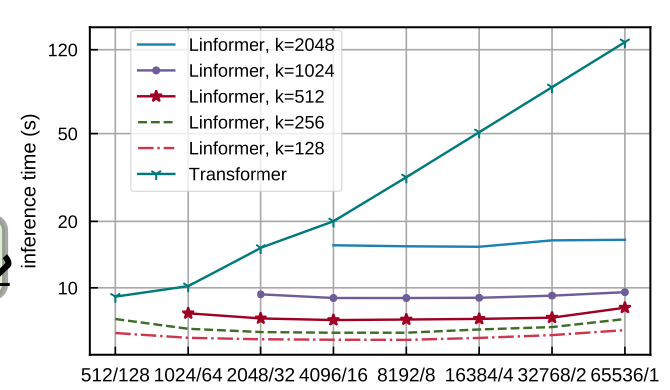 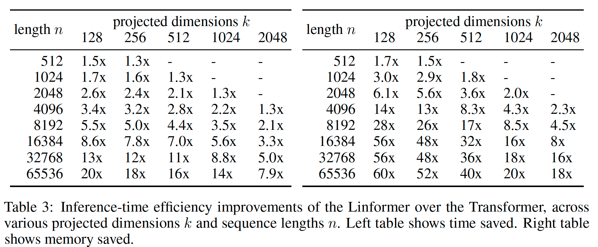Linformer presents substantial improvement in inference efficiency. We can see from the plot that as the input sequence length increases, the inference time of Linformer maintains constant while that of Transformer grows linearly. The table below empirically delivers the dramatic inference speed-up and memory savings as sequence length increases.
Despite of the boost in time and memory efficiency, Linformer also does not demonstrate performance improvement. In [5], researchers conducted several trials to discover the relationship between Linformer performance and approximation order i.e., rank, but the best they achieved does not surpass Transformer. Similar while better than Reformer, Linformer is another good substitution candidate for Transformer that requires less memory and less time to obtain outcomes of the same level.
Longformer
Longformer reconstructs self-attention mechanism with local and global attentions. Very similar to Sparse Transformer, Beltagy discovers the patterns of the attention matrices and introduce a different method to apply sparsity.
Local attention, analogous to convolution, employs a fixed-size window attention that slides over the sequence. To create a large receptive field, Longformer uses multiple stacked layers of local attention, hence the top layers have access to all input locations and capable of building representations that incorporate information across the entire input. [6] also demonstrates that it might be helpful to use different values of w for each layer to balance between efficiency and model representation capacity. Additionally, setting different dilation configurations for each attention head was shown to improve performance. Local attention reduces computational complexity to O(nw), which can be deemed as linear when window size very small comparing to sequence length.
The sparsity structure of Longformer is defined in the task-specific global attention. A token that is set with global attention attends to all tokens across the sequence, and all tokens in the sequence attend to it. Since the number of such tokens is small relative to and independent of sequence length, the combined complexity of local and global attention is still linear.
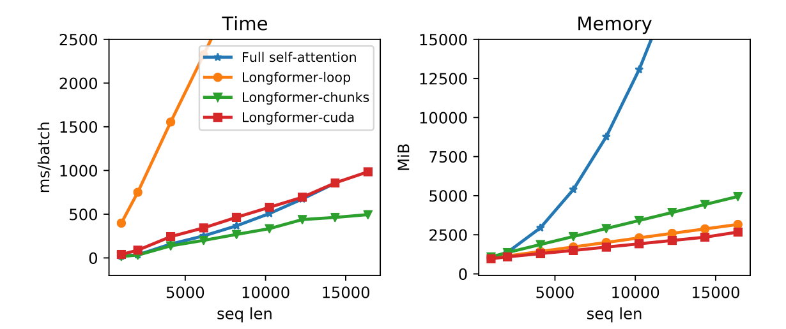 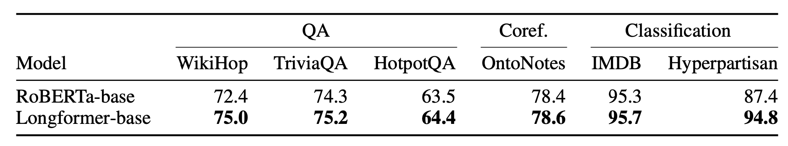From the diagrams, we can observe that Longformer successfully practices its theoretical complexity reductions. What’s more worth pointing out is its performance improvement on some bidirectional tasks, proving that the combination of local and global attentions effectively leverages the attention patterns of the data. Comparing to Sparse Transformer, Longformer exploits a better approach for sparsity introduction. Picking a set of necessary positions for task-specific global attention is relatively simpler than defining the sparse structure for attention matrices. At the same time, the information loss issue that Sparse Transformer suffers from is handled with local attention. On the other hands, same as Sparse Transformer, Longformer may not be usable without enough knowledge about the task. If the setup for global attention takes up a large amount of resources, the trade-off between cost and performance must be considered. Meanwhile, Longformer may require an enormous stack of local attention layers in order to create a large enough receptive field for very long sequences, and consequently increase training and evaluation runtime.
Performer
Finally, we are at the last Transformer variation - Performer. Choromanski et al. [7] evaluated the previous extensions and pointed out some general limitations. Existing enhancements do not approximate regular attention but rather propose simpler and more tractable attention mechanisms by incorporating additional constraints or trading regular with sparse attention using more layers. Since the modifications are proposed based on result observations or some hypotheses, these models are lacking rigorous guarantees for their representation power, and sometimes the validity of sparsity patterns can only be verified empirically through trial and error by constructing special GPU operations. Moreover, the additional constraints may impede application to long-sequence problems where approximations of the attention mechanism are not sufficient.
To properly approximate attention mechanism, Performer proposes the Fast Attention Via positive Orthogonal Random Features Mechanism (FAVOR+). FAVOR+ consists of two components, orthogonal positive random feature mapping and fast attention, where the former approximates the standard attention mechanism and the latter leverages the approximation for efficient computation.
Recalling the equation for self-attention, the attention score is computed with a softmax kernel whose arguments are query and key vectors. In order to practice fast attention discussed in the next paragraph, the softmax kernel is approximated with positive orthogonal random features. Random feature mapping is a well-studied method that has been proved to be capable of modeling most kernels used in practice. Since softmax is shift-invariant, the softmax kernel can be approximated with random feature mapping. An additional constraint of positivity is applied to the random features through hyperbolic trigonometry functions as negative dimension value generated from ordinary random feature mapping will lead to unstable behavior during training. To further reduce the variance of the estimator, the random features are forced to be exactly orthogonal and ensure stability and performance of the approximation. As a result, the softmax kernel can be rewrote as the equation above, and consequently apply fast attention to improve complexities.
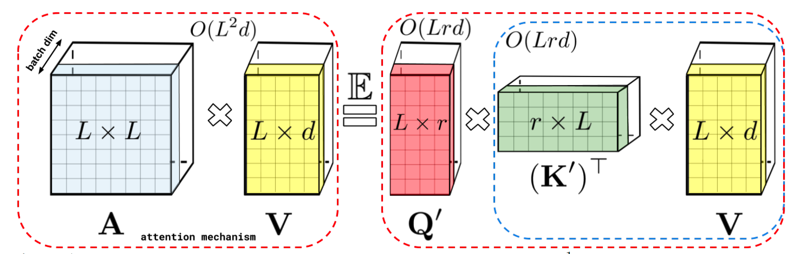Fast attention achieves complexity reduction by altering the computation order. After projecting the query and key matrices with orthogonal positive random feature mapping, we are no longer restricted to compute the product of query and key matrices first. We follow the computation order depicted in the image above and reduce algorithm complexities to O(Lrd) and O(Lr)+O(Ld)+O(rd) for time and space complexity, where L, r, d stand for sequence length, projected dimension, and hidden dimension, respectively.
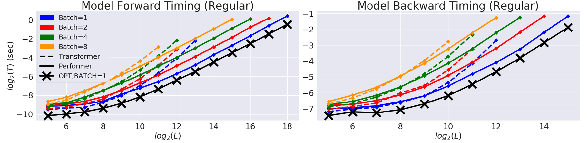Experiments show that hyperbolic estimator provides additional accuracy improvements that are strictly better than those with twice as many random features, indicating that positivity really help achieve optimal approximation. Orthogonality is also shown to reduce MSE (mean squared error) of the estimation with positive random features and improve the first exponential small bounds for probabilities of estimators’ tails for every hidden model dimension. The number of random features is also found to be independent of sequence length, enabling it to handle very long sequences without worrying approximation downgrade. In terms of complexity, Performer reaches nearly linear time and sub-quadratic memory consumption, achieving nearly optimal speedup and memory efficiency comparing to the theoretical optimal attention operation. In conclusion, Performer is a robust Transformer enhancement that is supported both theoretically and empirically. The optimal complexity and performance offers Performer the ability to apply to scenarios that Transformer fail to handle, and potentially brings impact to the modern world. Nevertheless, the threshold of fully understanding FAVOR+ is relatively high, so extra preparation is crucial before using Performer.
Conclusion
In this article, we went through 6 popular efficient extensions of Transformer, learning about the techniques utilized to improve performance as well as complexity reduction. These studies serve as the perfect evidence supporting that Transformer is a great foundation model. Also, these studies uncover more materials about sequence modeling, attention mechanism, and Transformer architecture, offering readers with deeper understandings and inspirations for future studies. Last but not least, these efficient Transformers provide engineers with more high-performance options for real-life applications and boost applicable developments.
Citation
- Rewon Child, Scott Gray, Alec Radford, Hya Sutskever, “Generating Long Sequences with Sparse Transformers” arXiv:1904.10509v1 [cs.LG] 23 Apr 2019
- Zihang Dai, Zhilin Yang, Yiming Yang, Jaime Carbonell, Quoc V. Le, Ruslan Salakhutdinov, “Trasnformer-XL: Attentive Language Models Beyond a Fixed-Length Context” arXiv: 1901.02860v3 [cs.LG] 2 Jun 2019
- Zhiling Yang, Zihang Dai, Yiming Yang, Jaime Carbonell, Ruslan Salakhutdinov, Quoc V. Le, “XLNet: Generalized Autoregressive Pretraining for Language Understanding” ZrXiv:1906.08237v2 [cs.CL] 2 Jan 2020
- Nikita Kitaev, Lukasz Kaiser, Anselm Levskaya “Reformer, The Efficient Transformer” arXiv.2001.04451v2 [cs.LG] 18 Feb 2020
- Sinong Wang, Belinda Z. Li, Madian Khabsa, Han Fang, Hao Ma, “Linformer: Self-Attention with Linear Complexity” arXiv:2006.04768v3 [cs.LG] 14 Jun 2020
- Iz Beltagy, Matthew E. Peters, Arman Cohan, “Longformer: The Long-Document Transformer” arXiv:2004.0515v2 [cs.CL] 2 Dec 2020
- Krzysztof Choromanski, Valerii Likhosherstv, David Dohan, Xingyou Song, Andreea Gane, Tamas Sarlos, Peter Hawkins, Jared Davis, Afroz Mohiuddin, Lukasz Kaiser, David Belanger, Lucy Colwell, Adrian Weller “Rethinking Attention with Performers” arXiv:2009.14794v4 [cs.LG] 19 Nov 2022